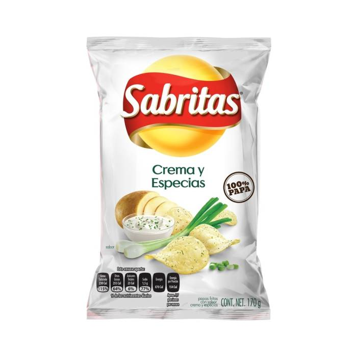
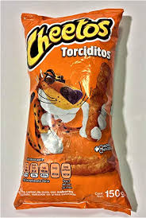
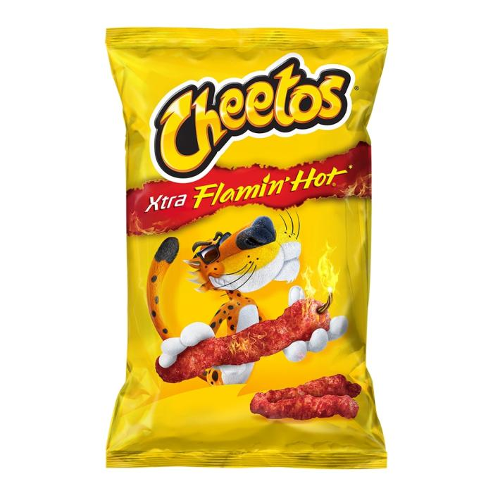

3.-Sabritas crema y especias
Pues estas papas tienen un sabor muy diferente y no a muchos les gusta pero también por eso siempre hay de estas disponibles y por eso está en el número 3

2.-Cheetos torciditos
La verdad ya me quedé sin ideas para la página web pero bueno, estas saben muy bien y son de mis favoritos, por algo están en el número 2 xd

1.-Cheetos Flamin Hot
Son casi lo mismo que los anteriores solo que en modo diablo y pues como están picosas me gustan mas que las anteriores

Bueno como no use ningún video para este top pondré un video de kirby cantando aquí: